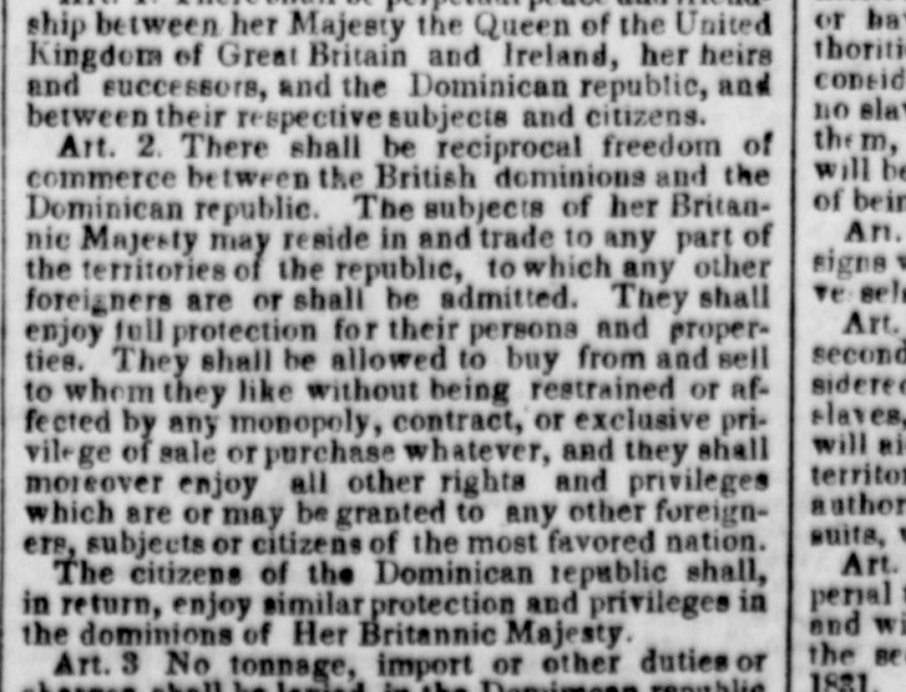
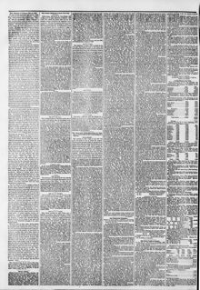

2 There shall he reciprocal freedom of commerce h? iweoo the2 Habrá libertad recíproca de comercio entre los
The New York Herald. New York [N.Y.], November 16, 1850. Page 2. View the originalVer el original


See the full pageVer la página completaThe New York Herald reported on articles of agreement between the British dominions and the Dominican Republic, establishing reciprocal freedom of commerce and equal protection for their respective subjects and citizens. Specifically, Article 2 grants British subjects the right to reside in, trade freely within, and buy and sell without monopolies in the Dominican Republic under most-favored-nation privileges, with corresponding rights granted to Dominican citizens in British dominions. Additionally, Article 3 stipulates that tonnage, import, and export duties levied on vessels and goods from either nation shall not exceed those levied on national vessels and goods.El New York Herald extractó las cláusulas convencionales convenidas entre los dominios británicos y la República Dominicana, estipulando recíproca libertad mercantil e idéntica salvaguardia para sus vasallos y ciudadanos. En concreto, el artículo 2 otorga a los súbditos británicos facultad de avecindarse, comerciar libremente y efectuar compras y ventas sin monopolios en territorio dominicano bajo el principio de nación más favorecida, con análogos fueros para los ciudadanos dominicanos en dominios de la Corona. Asimismo, el artículo 3 previene que los derechos de tonelaje, entrada y salida exigidos a naves y mercaderías de uno y otro estado no sobrepasarán los fijados a las unidades y géneros de pabellón nacional.
FULL TEXT:TEXTO COMPLETO:
ship between her Majesty the Queen of the United Kingdom of Great Britain and Ireland, her heirs and successors, and the Dominican republic, and between their respective subjects and citizens.buque entre su Majestad la Reina del Reino Unido de Gran Bretaña e Irlanda, sus herederos y sucesores, y la república dominicana, y entre sus respectivos súbditos y ciudadanos.
Art. 2. There shall be reciprocal freedom of commerce between the British dominions and the Dominican republic. The subjects of her Britannic Majesty may reside in and trade to any part of the territories of the republic, to which any other foreigners are or shall be admitted. They shall enjoy full protection for their persons and properties. They shall be allowed to buy from and sell to whom they like without being restrained or affected by any monopoly, contract, or exclusive privilege of sale or purchase whatever, and they shall moreover enjoy all other rights and privileges which are or may be granted to any other foreigners, subjects or citizens of the most favored nation.Art. 2. Habrá recíproca libertad de comercio entre los dominios británicos y la república dominicana. Los súbditos de su Majestad Británica podrán residir en y comerciar a cualquier parte de los territorios de la república, a la cual cualquier otro extranjero sea o deba ser admitido. Gozarán de plena protección para sus personas y propiedades. Se les permitirá comprar de y vender a quienes quieran sin ser restringidos o afectados por monopolio, contrato, o privilegio exclusivo alguno de venta o compra, y gozarán además de todos los demás derechos y privilegios que sean o puedan ser concedidos a cualquier otro extranjero, súbditos o ciudadanos de la nación más favorecida.
The citizens of the Dominican republic shall, in return, enjoy similar protection and privileges in the dominions of Her Britannic Majesty.Los ciudadanos de la república dominicana, a su vez, gozarán de similar protección y privilegios en los dominios de Su Majestad Británica.
Art. 3 No tonnage, import or other duties or charges shall be levied in the Dominican republic on British vessels, or on goods imported or exported in British vessels, beyond what are or may be levied on national vessels, or on the like goods imported or exported in national vessels, to and from the open portsArt. 3 Ningún derecho de tonelaje, importación u otros derechos o